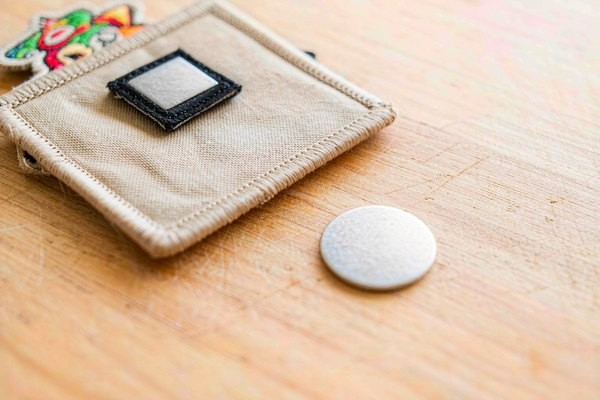

Magnetic Patches: Innovative Attachment Solutions
Most patches are permanent residents. Magnetic patches are the exception — they snap on and off in a second, swap between garments, and leave no needle holes behind. That makes them the quiet workhorse behind security uniform badge swaps, event staff role changes, collector displays, and gear made from fabrics you simply cannot sew into. But magnetism is physics with opinions: hold strength depends on patch size and magnet grade, laundering is a real risk, and there are places a magnet should never go. This guide covers how the system works, what it holds, where it wins and loses, and how to spec it correctly.
How Magnetic Patch Attachment Actually Works
A magnetic patch is never a single component — it is a two-part system. The patch itself carries one magnetic element in its backing, and the garment side needs a ferromagnetic partner. Get that second part wrong and the whole concept collapses, which is why the most common customer complaint ("my magnetic patch fell off") is almost always a garment problem, not a patch problem.
There are two standard constructions:
1. Magnet-in-patch, steel plate in garment. A thin bar magnet (typically 1.5–3 mm thick) is sewn between the embroidered face and the backing layer, positioned away from the edges so it cannot migrate. On the garment side, a flat steel plate — painted, vinyl-coated, or wrapped in fabric — is sewn or ironed into an inner lining. The patch snaps onto the plate through the outer fabric. This is the system most uniform programs use, because one shirt lining can hold many different patches indefinitely.
2. Magnet in patch, magnet in garment. Two opposing magnets sandwich the fabric between them. This delivers noticeably stronger hold for a given size — you get field strength from both sides instead of relying on a steel plate's reluctance circuit — but it doubles the magnet count and adds thickness, which matters on garments worn close to the body.
The magnet itself is nearly always ferrite or neodymium (NdFeB). Ferrite is cheap, corrosion-proof, and holds enough for a 3-inch badge. Neodymium delivers roughly five times the pull strength per volume, which is what you need once patches grow past 4 inches or carry heavy embroidery coverage. The trade: neodymium is brittle, rusts without plating, and loses magnetism if heated above its working temperature — irrelevant on a shirt, very relevant in a hot car or a heat-press mistake.

Holding Power: The Numbers That Matter
Magnet sellers quote pull force in kilograms against a thick, flat, clean steel surface. Your uniform is none of those things. Fabric thickness and the plate's geometry slash real-world numbers, so treat catalog values as a starting point, not a promise. Rough real-world expectations for a sewn-in neodymium bar with a 0.8 mm steel plate behind cotton twill:
| Patch Size | Typical Magnet | Real Pull Through Fabric | Shear (Sliding) Hold |
|---|---|---|---|
| 2" name bar (50×20 mm) | 1× ferrite bar 40×15 mm | 0.4–0.7 kg | Fair — rotates on smooth fabric |
| 3" badge (75 mm) | 2× neodymium discs 15 mm | 1.0–1.6 kg | Good |
| 4" chest patch (100 mm) | 2× neodymium bars 40×10 mm | 1.8–2.8 kg | Good |
| 5"+ back patch | 3–4 magnet points | 3 kg and up | Good, but weight becomes the issue |
Two physics details matter more than the headline number. First, shear vs pull: a magnet resists being pulled straight off much better than it resists sliding sideways, so patches on smooth nylon jackets migrate unless the magnet layout spreads across the patch width. Second, fabric is a gap: every millimeter of cloth between magnet and steel weakens the field sharply. A patch that feels bombproof on a polo shirt can slide right off a 2 mm fleece — which is why heavy knitwear needs bigger magnets, not more faith.
As a sanity rule, a chest patch needs to resist about 0.5 kg of incidental snagging. Anything holding less than that on your actual garment — test it — will become a "found it in the parking lot" story.
Where Magnetic Patches Win
Quick-swap uniform programs. Security firms, event staff, and venue crews change roles faster than laundry cycles. One shirt, several identities: "STAFF" for general duty, "SUPERVISOR" for the shift lead, sponsor logos for game day. Sew-on patches make each swap a needle-and-thread job; magnetic patches make it a two-second snap. Rental uniform services love the same trick — linings outlast garments, and the garment never gets punctured.
Fabrics you cannot or should not pierce. Leather jackets, down puffers, coated rain shells, and technical ski wear all lose waterproofing or insulation value where a needle passes. Sew-on is off the table, iron-on risks the coating, and adhesive is a temp solution. A magnetic system with the plate carried in an inner pocket or sewn only into the lining leaves the shell fabric untouched. The same logic applies to heirloom garments and rented costumes.
Collectors and displays. Trading-pin collectors and patch clubs long ago adopted magnet-backed display boards, and the same approach works for showing a full patch collection on a fabric banner without committing any patch to a permanent position. Swap the layout whenever the mood strikes; no residue, no holes, no value loss.
Name badges and role tags. The classic magnetic name badge is essentially a small magnetic patch, and the reason it displaced pin badges is the same reason magnetic patches exist: no pin holes in expensive uniform shirts, and staff can move the badge from shirt to jacket in a second.
Where Magnetic Patches Lose
Honesty time — magnets are the wrong answer for a lot of jobs, and knowing the failure modes is what separates a spec sheet from a wish list.
The washing machine is enemy territory. A free magnet tumbling loose is a patch that will not come home, and even a sewn-in one hammers against drum walls while wet. Magnets themselves survive water fine, but the embroidered patch around them does not enjoy the extra swinging weight. If the garment is a every-wash item — work shirts, kids' clothes — sew-on or iron-on with a stitched edge is the durable choice. Magnetic systems belong on garments that get spot-cleaned or gently washed, or where the patch is removed before laundering (a genuine workflow in badge programs).
High-movement zones shed them. Shoulder seams, sleeve cuffs, and anything that rubs against backpack straps put shear loads on the attachment all day. Chest and center-back positions are the comfortable zone.
Thin, flowy fabrics betray the concept. A strong magnet on chiffon or a light T-shirt just puckers the fabric around a lumpy steel plate. Magnetic patches need a garment with enough body to carry the hardware invisibly.
Cost runs 2–4× a plain backing. Magnets, plates, extra sewing operations, and the engineering to place them correctly all add up. For a patch that will sit in one spot forever, that money is wasted — a straight sew-on does the same job for pennies.
Magnetic vs Every Other Attachment Method
Here is how the magnet stacks against the methods covered in our full patch backing types guide:
| Method | Removable? | Wash Durability | Fabric Damage | Best For |
|---|---|---|---|---|
| Magnetic | Instant, unlimited swaps | Poor–fair (remove first) | None | Role-swap uniforms, no-pierce fabrics, display |
| Sew-on | No (re-sew to move) | Excellent | Needle holes | Long-term wear, motorcyclist and work gear |
| Iron-on | No (heat to move) | Good with stitched edge | Heat-sensitive fabrics | Everyday cotton wear |
| Velcro | Instant swaps | Good when sewn | None, but bulky | Tactical gear, hook-and-loop panels |
| Adhesive | Single use | None | Residue | One-day events |
| Pin backing | Instant | n/a | Pin hole | Badges on any garment |
The pattern is easy to read: permanence and durability live at the sew-on end, and removability lives at the magnetic/Velcro end. If your use case involves repeated swaps — more than a handful over the patch's life — magnets or Velcro earn their premium. If the patch ships once and stays put, sew-on wins on every axis that matters. Our sew-on guide and adhesive guide cover those ends in detail.
Safety Limits You Should Actually Respect
Pacemakers and implanted devices. This is the big one. Magnets within roughly 15 cm (6 inches) of a pacemaker or ICD can interfere with or reprogram the device. A chest patch sits in exactly the wrong neighborhood for someone with an implant. Staff uniform programs must offer a non-magnetic badge option — sew-on or pin — and say so up front. It is a two-line addition to the uniform order form that removes a genuine medical risk.
Small parts and kids. A 15 mm neodymium disc is a serious swallowing hazard, and two swallowed magnets can pinch intestinal tissue. Patch programs for children's clothing should use ferrite magnets at minimum, sewn in with reinforced stitching, or skip magnets entirely.
Electronics and cards. A chest-height magnet can wipe a hotel key card in the same pocket and will slap lazily against anything magnetic it leans on. Not a dealbreaker — just brief the wearer.
Pinch points. Large neodymium pairs snap together hard enough to pinch skin and can crack if they slam edge-on. Anyone handling raw magnetic plates for installation should expect this once and learn from it.
Designing a Patch Meant to Hold a Magnet
The magnet changes a few design decisions upstream:
Weight discipline. The attachment has a fixed pull budget, so heavy embroidery styles eat it fast. A densely stitched 4-inch patch with 100% thread coverage can weigh 15–25 g before the magnet — combined with real-world shear, that is already near the practical ceiling. Lightweight constructions like our woven or printed patch styles keep mass down and let the magnet do its job; a chunky 3D-puff design may simply be too heavy to hang magnetically at the same size.
Stiffness and placement channel. The magnet is sewn into a dedicated channel or pocket inside the backing, and the patch needs enough body for that channel to sit flat. Very flimsy patches ripple around the magnet. A firm backing layer (or a doubled backing) keeps the face smooth.
Positioning matters more than with sew-on. Because there is no stitching anchoring the patch's perimeter, the magnet layout defines where the patch can rotate or slide. Two magnet points spread wide near the patch's top corners resist rotation far better than one central magnet. Placement guidance follows the same geometry logic as our patch placement guide — a centered, level patch with distributed hold points stays put.
Garment-side planning. Decide early whether the garment gets a sewn-in plate, a plate in an internal pocket, or a second magnet. Retrofitting later usually means opening a seam, which is a tailor's job, not a patch job.
Care and Longevity
Magnetic patches live longest under one simple rule: remove before washing. Wash the garment normally; keep the patch aside. If the patch is sewn into a wash-in-place garment, use a gentle cycle, cold water, and a mesh laundry bag to cut the tumbling load, and expect the attachment to be the first component to age.
Magnets do not "wear out" in any meaningful timeframe at room temperature, but they can demagnetize with heat (a hot dryer, a hot car dashboard, an iron pressed directly on the patch — the same heat warning as iron-on care) and neodymium will corrode if the plating is breached. Store spare patches flat, paired onto a steel plate or against each other in pairs — a free patch in a drawer finds every paperclip and staple in the building.
Clean the mating surfaces occasionally. Lint, sand, or a stray staple between magnet and plate both weakens hold and scratches embroidery from the inside.
Frequently Asked Questions (FAQ)
Q1: Will a magnetic patch fall off during normal wear?
Not if it is specced for the garment. A properly sized magnet with a steel plate holds a 3–4 inch chest patch well past the ~0.5 kg snag threshold on typical shirt fabric. Failures almost always trace back to three causes: thick fabric between magnet and plate, a single small magnet on a large patch, or smooth fabrics that let the patch slide sideways. Test on the actual garment before ordering a full run.
Q2: Can magnetic patches go through the washing machine?
They can survive a gentle cycle, but they should not have to. Remove the patch first when possible — the tumbling weight and drum impacts age both the patch and the attachment. For garments that must be washed with the patch on, sew-on or iron-on backing is the honest recommendation.
Q3: Are magnetic patches safe for people with pacemakers?
No — keep magnets at least 15 cm away from implanted cardiac devices, which rules out chest patches entirely. Uniform programs should always offer a pin or sew-on alternative and flag the magnetic option in their documentation so wearers can choose.
Q4: How many times can you swap a magnetic patch on and off?
Effectively unlimited. Magnets do not fatigue at room temperature and there is no mechanical fastener to wear out. The limiting factor is the embroidery itself — the patch face wears from handling, not the attachment. Compare that to adhesive (one use) or Velcro panels (hundreds of cycles but visibly aging).
Q5: Can any patch be converted to a magnetic backing?
Mostly yes at production time — the magnet is sewn into a channel during manufacturing, which is the clean and durable way. Retro-converting an existing finished patch is possible if its backing can be opened and re-stitched, but the result is bulkier and less tidy than ordering the backing built in. For patches that will move between many garments, order the magnetic channel from the start.
Conclusion: Magnets Earn Their Keep on Flexibility, Not Permanence
Magnetic patches solve one problem beautifully — a patch that must move between garments or identities without tools, stitching, or damage — and solve nothing else. Spec them with the physics in view: matching magnet and plate for your fabric thickness, hold points spread against rotation, weight kept honest, and a non-magnetic alternative for anyone with an implanted device. For patches that live in one place, a straight sew-on remains cheaper, flatter, and nearly indestructible.
Tell us the garment, the fabric, and how often the patch will move, and we will spec the magnet type, count, and placement for you — with a free digital proof in 12 hours and no minimum order. Request a free quote and make your next patch snap into place, literally.